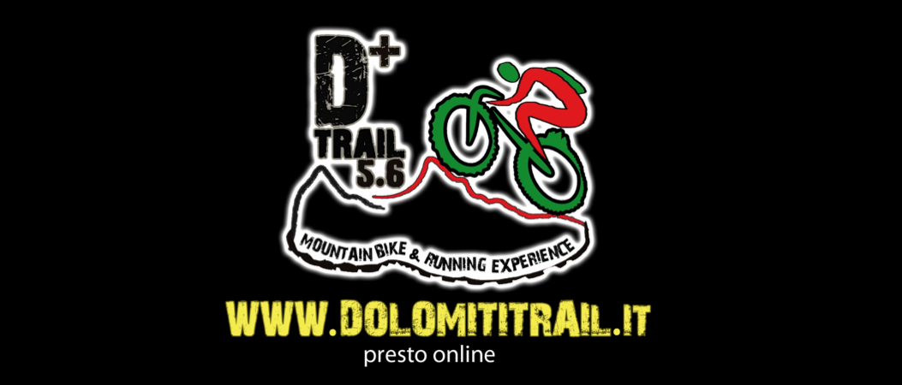

Sabato 1 maggio 2027, da confermare
Giro e Trail delle Coste
Partenza dalla piazza di Calalzo, poi pranzo, musica e premiazioni. Nel pomeriggio il duathlon per i bambini.
- Giro
- 7km
- Trail
- 16km
- Quota online
- 12 €
Siamo il Gruppo Marciatori Calalzo – Atletica Cadore, dal 1973. Organizziamo il Giro e il Trail delle Coste e il Cadore Km Verticale, e alleniamo ragazze e ragazzi dai 7 ai 18 anni.
Il logo in questa bozza è un ridisegno provvisorio, da sostituire con il file originale.
Prossima gara
Giro e Trail delle Coste
Sabato 1 maggio 2027 a Calalzo, data da confermare
Programma e iscrizioniOgni gara ha la sua pagina: volantino e informazioni dell'anno, iscrizione online, classifiche e foto delle edizioni passate.
Partenza dalla piazza di Calalzo, poi pranzo, musica e premiazioni. Nel pomeriggio il duathlon per i bambini.
Mille metri di salita da Vallesella alla Croda, con le Marmarole e gli Spalti di Toro davanti.
Cerchi classifiche e foto? Sono nella pagina di ogni gara: Giro delle Coste, Km Verticale.


